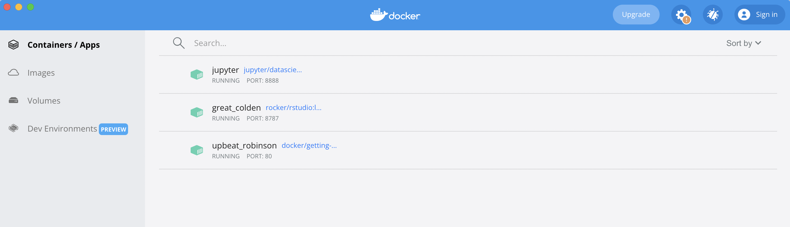
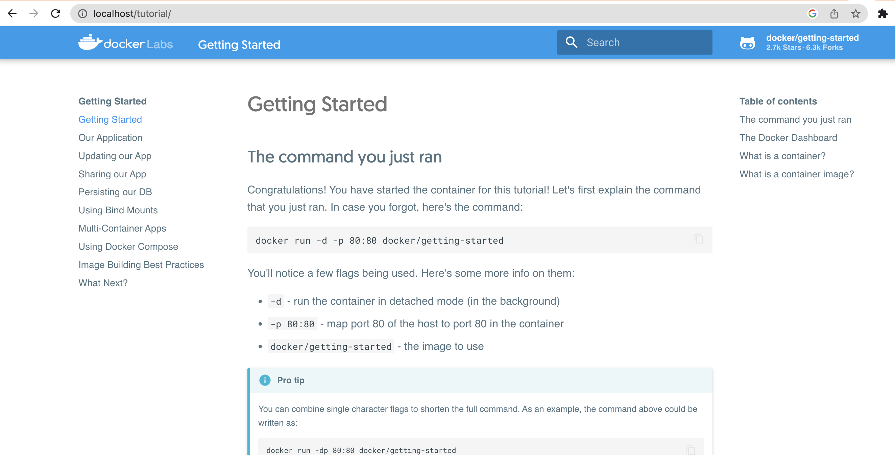

Week 1. Intro to Docker
What is Docker?
ChatGPT says: Docker is an open-source platform that allows you to automate the deployment and management of applications within software containers. It provides a way to package software and its dependencies into a standardized unit called a container. These containers are lightweight, portable, and self-sufficient, containing everything needed to run the application, including the code, runtime, system tools, libraries, and settings.

Install Docker
When working with virtual machines (VM) (think say Codespaces), a dockerfile is what defines our virtual environment and the tools (software) that we’ll have in that environment. The systems that set-up your VM have docker installed.
But we can also use docker containers on our personal computers. That’s what we’ll do today. Note, Docker Desktop requires a license for use on government computers.
Let’s run a container
Part 1 Video
After you have Docker installed, you can run a container.
docker run -d -p 80:80 docker/getting-starteddockercall Dockerrunrun a container-din detached setting-puse this port sohttp://localhost:80is how you open the application in a browserdocker/getting-startedthe name of the container on DockerHub
First let’s look at this on DockerHub

Click on tags

If you are on a Mac with an Apple chip (so M1, M2, etc), you need to
check if there is linux/arm64 listed. This means there is a
version of the container that will work on your operating system. If you
only see linux/amd64, you can try emulation but it might
not work. To increase success, make sure you have a recent version of
Docker installed. To run in emulation mode (Rosetta), you add this to
your docker run call:
--platform linux/amd64.
Run the container
Open a terminal (or shell) window on your computer, and type or paste this in:
docker run -d -p 80:80 docker/getting-startedThe first time it’ll download the container. Once it is done, we can see the running container in the Docker app or run
docker psin the terminal to see the running container.
Let’s look at the Docker app

Now we can open our app
Head to the browser and type
http://localhost:80
Why is the port listed twice?
It’s not exactly. In 80:80, the second # is
the port that the application is listening under and your application
documentation should tell you if it is listening on a specific port. The
first one is the port you want to use in your browser. So we could do
8181:80 and go to our app with
localhost:8181.
Rocker docker images
Part 2 Video
https://jsta.github.io/r-docker-tutorial/02-Launching-Docker.html
Note the rocker apps are listening on port 8787, so make sure the
number after the : is 8787. The first number is what you
will use in the browser. So if you did 8080:8787, then go
to localhost:8080.
docker run --rm -ti -e PASSWORD=yourpassword -p 8787:8787 rocker/rstudioUsing a versioned rocker image
The June 2023 announcement of the retirement of popular spatial packages in R is a good example of when the versioned rocker images are useful.

If we don’t want to update our code but it uses R packages that have been retired, we can use Docker to open a version of R and a snapshot of the R packages at that time.
Let’s spin a R 4.1 container
Everyone except MacOS with Apple chip.
docker run \
-d \
-p 8181:8787 \
-e USER=test \
-e PASSWORD=test \
rocker/geospatial:4.1MacOS with Apple chip add --platform linux/amd64 so run
this
docker run --platform linux/amd64 \
-d \
-p 8181:8787 \
-e USER=test \
-e PASSWORD=test \
rocker/geospatial:4.1Changing the rocker image
FROM rocker/tidyverse:latest
# Install R packages
RUN install2.r --error \
methods \
jsonlite \
tseries